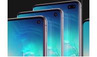
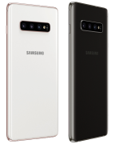

Ещё больше возможностей
Новый дизайн

Абсолютно новый Infinity-O
экран — на передней стороне
смартфона нет ничего, кроме
огромного экрана и фронтальной камеры.

Для любителей роскоши,
модель S10+ будет
выпускаться в керамическом
корпусе черного и белого цветов.
Смартфоны доступны в 4х
стильных цветах: Перламутр,
Аквамарин, Оникс и
Цитрус(для S10e).
В моделях S10 и S10+
установлены защитные
стекла нового поколения –
Gorilla Glass 6.
Сканер отпечатка в экране
Отличное качество съемки новых поколение смартфонов
Samsung позволит создать и смотреть праздники,
семейные торжества и памятные
моменты на огромном экране,
с яркими, живыми цветами и прекрасной детализацией.
Дополнительная система стабилизации сделает видеоролики плавными и красивыми.
Сверхзамедленная съемка (960 кадров в секунду)
теперь в 2 раза дольше. Камера в S10 способна распознать
самое стремительное движение, такое как
языки пламени, брызги воды, дым из под колес спорткара.
Аксессуары
Для любителей роскоши, модель S10+
будет выпускаться в керамическом
корпусе черного и белого цветов.
Для любителей роскоши, модель S10+
будет выпускаться в керамическом
корпусе черного и белого цветов.
Galaxy S10+ в режиме Dex
поддерживает широкоформатные
мониторы. Мощный смартфон превращается в мощный десктоп.
Смартфон S10 сразу укомплектован защитной пленкой.
Приложения и сервисы Samsung
Благодаря приложению Smart Switch
можно перенести информацию со старого смартфона на новый.
Приложение Samsung Health помогает контролировать
физическую активность и вести дневник питания.
Интеллектуальный помощник Bixby обеспечит быстрый доступ к переводчику,
поиску в Интернете, покупкам и многому другому.
Приложение Samsung Pay дает возможность оплачивать свои покупки при помощи смартфона.
Благодаря приложению Smart Things можно управлять всеми смарт-устройствами дома.